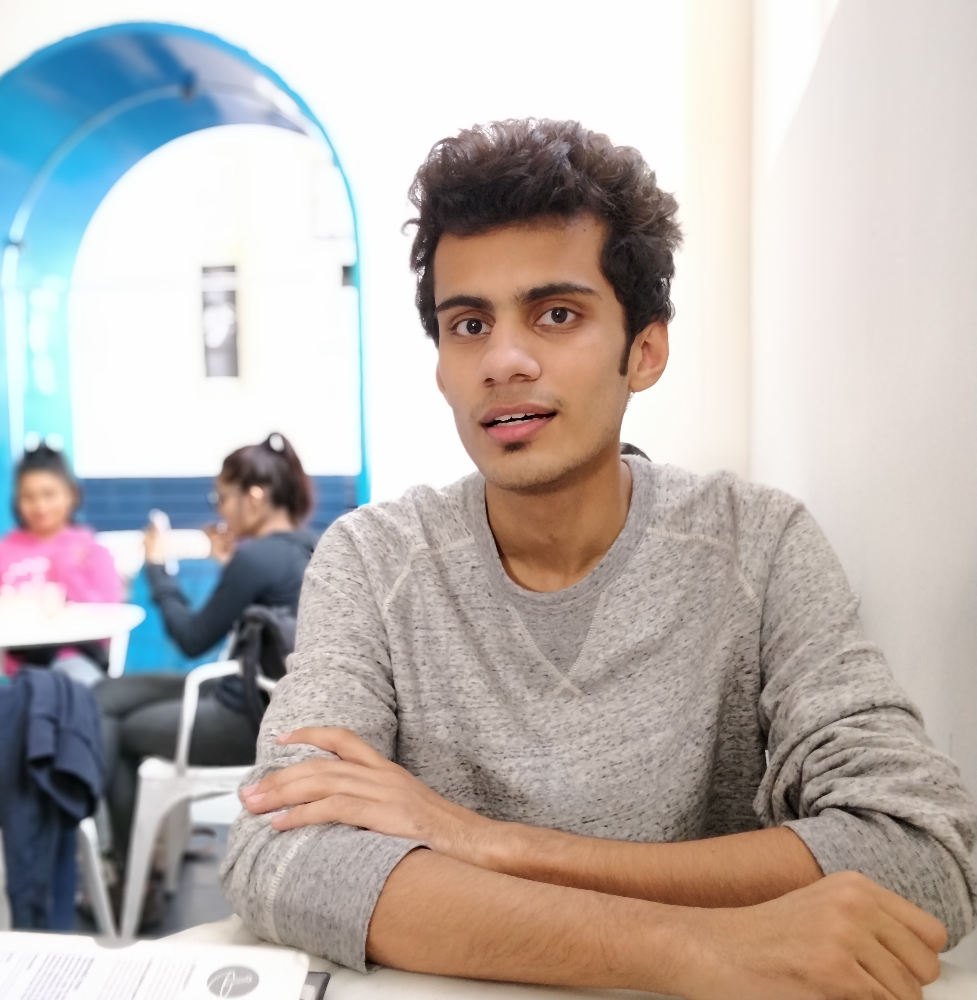

Hey, I'm Naman, an undergraduate CSE student at IITK.
You can send me an email on any of these:
- namanv@cse.iitk.ac.in
- naman13verma@gmail.com
- namanva@iitk.ac.in (The best email ID ever)
Programming Languages (and Related Softwares):
C, C++, Python, Bash, Awk, CUDA, Latex
Other Skills:
Adobe Photoshop, iMovie, Fusion 360
Jack of all, master of none...

Things I have been a part of:
Counselling Service
Talkhiyaan, my ART105A group
Vox Populi, journalism society of IITK
Some new Found Interests this Semester:
- Algorithms
- Parallel Programming
- Video Making
- Manufac....hahahahahhahahahahaha